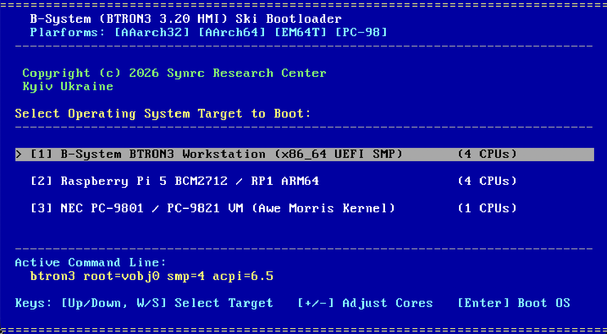

Cleanroom multi-architecture boot manager combining Haiku's aesthetic grace and NetBSD's boot infrastructure reliability. Supports Raspberry Pi 1–5 (ARM MMIO), x86_64 UEFI SMP (ACPI MADT), and NEC PC-9801/PC-9821 VM (Awe Morris kernel) with live command-line editing and multi-core affinity allocation.

Bootloader (🎿) multi-architecture boot manager running on QEMU x86_64 UEFI SMP with live target selector, CPU core scaling, and interactive command line editor.
core_boot.c) — Eliminates fragile legacy 2-stage MBR/VBR chainloaders; incorporates Multiboot 1 header (0x1BADB002) loaded at 1 MB directly into protected/long mode by QEMU and modern hypervisorsbtron/core.h hooks: CPU MSRs (IA32_APIC_BASE 0x1B), CPUID feature leaves, IO-APIC MMIO redirection depth, HPET femtosecond period counters, and PC-98 I/O ports (0xF2 A20, 0x21/0xA1 PIC IMR)core_boot.c acts as a pure sequence orchestrator (btron_core_banner(), btron_core_init(), btron_core_mem_log(), btron_core_hfds_log(), vesa_probe_log()), delegating hardware queries cleanly to machine-specific drivers[↑/↓], [W/S]), inline command line editing ([E]), and
multi-core CPU affinity control ([+]/[-])core_smp.c) — Cleanroom UEFI implementation: GOP framebuffer discovery, ACPI
6.5 XSDT/MADT parser, LAPIC MMIO (0xFEE00000), 16-bit AP trampoline at 0x9000, and
INIT-SIPI-SIPI multi-core rendezvousboot_pc98.c) — Full NEC PC-9801/PC-9821 support: planar
VRAM text splash at 0xA0000/0xA2000, INT 1Ah RTC clock reads, INT 2Fh BTRON protocol handshake,
A20 gate activation via port 0xF2, and 32-bit Protected Mode transition[S]) upon kernel
fault or invalid device tree configurationUnlike conventional PC operating systems that rely on complex two-stage stage1/stage2 boot blocks (e.g. GRUB MBR/VBR), B-System uses a direct Multiboot-compliant single-stage binary architecture. The compiled ELF image (btron-uchida.elf or btron-morris.elf) is directly loaded by hypervisors and firmware into RAM at 1 MB.
core_boot.c 内のMultibootヘッダ（0x1BADB002）によりファームウェア/QEMUから1MBメモリ空間へ直接展開。固定モック文字列を排除し、MSRレジスタ（0x1B）、CPUID、IO-APIC、HPET、およびPC-98固有ポート（0xF2）からハードウェア実値を直接読み出して起動シーケンスを進行します。[↑/↓]
or [W/S] to highlight an entry.[E] to customize boot arguments (e.g., console baud rate, root filesystem, memory limits)
or press [+]/[-] to scale allocated CPU cores.[Enter] to boot — on SMP systems, Ski coordinates all AP cores via LAPIC SIPI sequences
before leaping into the kernel entry point.